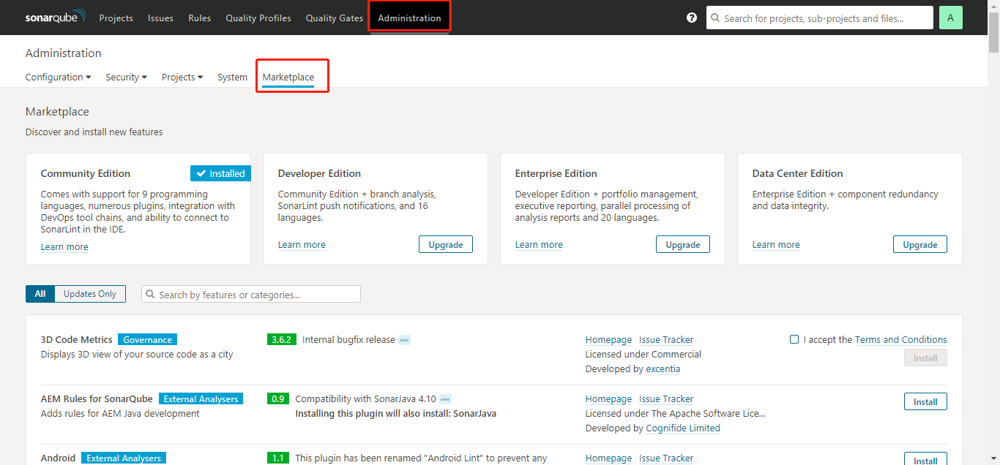

SonarQube的配置使用(基于maven项目)
一、SonarQube简介
SonarQube（也称为Sonar）是一个开源质量管理平台 。支持包括java, C#, C/C++, PL/SQL, Cobol, JavaScrip, Groovy等二十几种编程语言的代码质量管理与检测。
本文是对java项目（基本maven管理）的扫描
二、安装
1、SonarQube7.0下载
https://www.sonarqube.org/downloads/
2、jdk 1.8
3、maven-3.3.9
4、mysql 5.7
三、启动服务
选择对应的系统版本启动服务
如windows64位系统
打开 SonarQube7.0/bin/windows-x86-64
双击StartSonar.bat，启动服务
默认端口 9000
浏览器访问http://localhost:9000 , 初始管理员账号:admin，密码 :admin。
注意：关闭服务后，需要在任务管理器内将对应的java进程删除，否则再重启会报错，报错内容可以在logs里面查看
###四、配置
1、修改sonarqube-7.0/conf/sonar.properties
1 | #----- MySQL 5.6 or greater |
修改后需要重启，重启后可以再到本地 Mysql 数据库 sonar 中创建好了所需各表 （数据库服务需要启动成功）
启动成功界面：
2、修改maven目录下conf/settings.xml
pluginGroups标签内添加配置
1 | <pluginGroups> |
profiles标签内添加
1 | <!-- sonar --> |
3、maven项目下创建sonar-project.properties
1 | # must be unique in a given SonarQube instance |
也可以采用配置pom.xml方式：（来自官网，需要注意引入jar包版本与sonarqube版本对应）
1 | <build> |
五、启动扫描
在项目目录下执行mvn sonar:sonar
扫描成功后，刷新localhost:9000（可多次刷新），首页会出现对应项目，点击项目，可查看对应的代码质量检测结果，如图
若扫描失败，可在logs下查看错误日志，寻找具体解决方法
六、下载其他插件
在administration-marketplace可下载其他插件，如汉化包等
